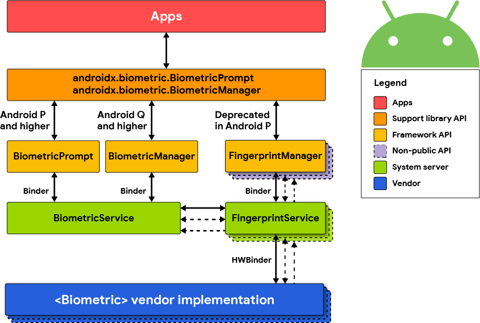

Android Local Authentication¶
During local authentication, an app authenticates the user against credentials stored locally on the device. In other words, the user "unlocks" the app or some inner layer of functionality by providing a valid PIN, password or biometric characteristics such as face or fingerprint, which is verified by referencing local data. Generally, this is done so that users can more conveniently resume an existing session with a remote service or as a means of step-up authentication to protect some critical function.
As stated before in chapter "Mobile App Authentication Architectures": The tester should be aware that local authentication should always be enforced at a remote endpoint or based on a cryptographic primitive. Attackers can easily bypass local authentication if no data returns from the authentication process.
In Android, there are two mechanisms supported by the Android Runtime for local authentication: the Confirm Credential flow and the Biometric Authentication flow.
Testing Confirm Credentials (MSTG-AUTH-1 and MSTG-STORAGE-11)¶
Overview¶
The confirm credential flow is available since Android 6.0 and is used to ensure that users do not have to enter app-specific passwords together with the lock screen protection. Instead: if a user has logged in to the device recently, then confirm-credentials can be used to unlock cryptographic materials from the AndroidKeystore. That is, if the user unlocked the device within the set time limits (setUserAuthenticationValidityDurationSeconds), otherwise the device needs to be unlocked again.
Note that the security of Confirm Credentials is only as strong as the protection set at the lock screen. This often means that simple predictive lock-screen patterns are used and therefore we do not recommend any apps which require L2 of security controls to use Confirm Credentials.
Static Analysis¶
Reassure that the lock screen is set:
KeyguardManager mKeyguardManager = (KeyguardManager) getSystemService(Context.KEYGUARD_SERVICE);
if (!mKeyguardManager.isKeyguardSecure()) {
// Show a message that the user hasn't set up a lock screen.
}
-
Create the key protected by the lock screen. In order to use this key, the user needs to have unlocked the device in the last X seconds, or the device needs to be unlocked again. Make sure that this timeout is not too long, as it becomes harder to ensure that it was the same user using the app as the user unlocking the device:
try { KeyStore keyStore = KeyStore.getInstance("AndroidKeyStore"); keyStore.load(null); KeyGenerator keyGenerator = KeyGenerator.getInstance( KeyProperties.KEY_ALGORITHM_AES, "AndroidKeyStore"); // Set the alias of the entry in Android KeyStore where the key will appear // and the constrains (purposes) in the constructor of the Builder keyGenerator.init(new KeyGenParameterSpec.Builder(KEY_NAME, KeyProperties.PURPOSE_ENCRYPT | KeyProperties.PURPOSE_DECRYPT) .setBlockModes(KeyProperties.BLOCK_MODE_CBC) .setUserAuthenticationRequired(true) // Require that the user has unlocked in the last 30 seconds .setUserAuthenticationValidityDurationSeconds(30) .setEncryptionPaddings(KeyProperties.ENCRYPTION_PADDING_PKCS7) .build()); keyGenerator.generateKey(); } catch (NoSuchAlgorithmException | NoSuchProviderException | InvalidAlgorithmParameterException | KeyStoreException | CertificateException | IOException e) { throw new RuntimeException("Failed to create a symmetric key", e); } -
Setup the lock screen to confirm:
private static final int REQUEST_CODE_CONFIRM_DEVICE_CREDENTIALS = 1; //used as a number to verify whether this is where the activity results from Intent intent = mKeyguardManager.createConfirmDeviceCredentialIntent(null, null); if (intent != null) { startActivityForResult(intent, REQUEST_CODE_CONFIRM_DEVICE_CREDENTIALS); } -
Use the key after lock screen:
@Override protected void onActivityResult(int requestCode, int resultCode, Intent data) { if (requestCode == REQUEST_CODE_CONFIRM_DEVICE_CREDENTIALS) { // Challenge completed, proceed with using cipher if (resultCode == RESULT_OK) { //use the key for the actual authentication flow } else { // The user canceled or didn’t complete the lock screen // operation. Go to error/cancellation flow. } } }
Make sure that the unlocked key is used during the application flow. For example, the key may be used to decrypt local storage or a message received from a remote endpoint. If the application simply checks whether the user has unlocked the key or not, the application may be vulnerable to a local authentication bypass.
Dynamic Analysis¶
Validate the duration of time (seconds) for which the key is authorized to be used after the user is successfully authenticated. This is only needed if setUserAuthenticationRequired is used.
Testing Biometric Authentication (MSTG-AUTH-8)¶
Overview¶
Biometric authentication is a convenient mechanism for authentication, but also introduces an additional attack surface when using it. The Android developer documentation gives an interesting overview and indicators for measuring biometric unlock security.
The Android platform offers three different classes for biometric authentication:
- Android 10 (API level 29) and higher:
BiometricManager - Android 9 (API level 28) and higher:
BiometricPrompt - Android 6.0 (API level 23) and higher:
FingerprintManager(deprecated in Android 9 (API level 28))

The class BiometricManager can be used to verify if biometric hardware is available on the device and if it's configured by the user. If that's the case, the class BiometricPrompt can be used to show a system-provided biometric dialog.
The BiometricPrompt class is a significant improvement, as it allows to have a consistent UI for biometric authentication on Android and also supports more sensors than just fingerprint.
This is different to the FingerprintManager class which only supports fingerprint sensors and provides no UI, forcing developers to build their own fingerprint UI.
A very detailed overview and explanation of the Biometric API on Android was published on the Android Developer Blog.
FingerprintManager (deprecated in Android 9 (API level 28))¶
Android 6.0 (API level 23) introduced public APIs for authenticating users via fingerprint, but is deprecated in Android 9 (API level 28). Access to the fingerprint hardware is provided through the FingerprintManager class. An app can request fingerprint authentication by instantiating a FingerprintManager object and calling its authenticate method. The caller registers callback methods to handle possible outcomes of the authentication process (i.e. success, failure, or error). Note that this method doesn't constitute strong proof that fingerprint authentication has actually been performed - for example, the authentication step could be patched out by an attacker, or the "success" callback could be overloaded using dynamic instrumentation.
You can achieve better security by using the fingerprint API in conjunction with the Android KeyGenerator class. With this approach, a symmetric key is stored in the Android KeyStore and unlocked with the user's fingerprint. For example, to enable user access to a remote service, an AES key is created which encrypts the authentication token. By calling setUserAuthenticationRequired(true) when creating the key, it is ensured that the user must re-authenticate to retrieve it. The encrypted authentication token can then be saved directly on the device (e.g. via Shared Preferences). This design is a relatively safe way to ensure the user actually entered an authorized fingerprint.
An even more secure option is using asymmetric cryptography. Here, the mobile app creates an asymmetric key pair in the KeyStore and enrolls the public key on the server backend. Later transactions are then signed with the private key and verified by the server using the public key.
Static Analysis¶
Note that there are quite some vendor/third party SDKs, which provide biometric support, but which have their own insecurities. Be very cautious when using third party SDKs to handle sensitive authentication logic.
The following sections explain the different biometric authentication classes.
Biometric Library¶
Android provides a library called Biometric which offers a compatibility version of the BiometricPrompt and BiometricManager APIs, as implemented in Android 10, with full feature support back to Android 6.0 (API 23).
You can find a reference implementation and instructions on how to show a biometric authentication dialog in the Android developer documentation.
There are two authenticate methods available in the BiometricPrompt class. One of them expects a CryptoObject, which adds an additional layer of security for the biometric authentication.
The authentication flow would be as follows when using CryptoObject:
- The app creates a key in the KeyStore with
setUserAuthenticationRequiredandsetInvalidatedByBiometricEnrollmentset to true. Additionally,setUserAuthenticationValidityDurationSecondsshould be set to -1. - This key is used to encrypt information that is authenticating the user (e.g. session information or authentication token).
- A valid set of biometrics must be presented before the key is released from the KeyStore to decrypt the data, which is validated through the
authenticatemethod and theCryptoObject. - This solution cannot be bypassed, even on rooted devices, as the key from the KeyStore can only be used after successful biometric authentication.
If CryptoObject is not used as part of the authenticate method, it can be bypassed by using Frida. See the "Dynamic Instrumentation" section for more details.
Developers can use several validation classes offered by Android to test the implementation of biometric authentication in their app.
FingerprintManager¶
This section describes how to implement biometric authentication by using the
FingerprintManagerclass. Please keep in mind that this class is deprecated and the Biometric library should be used instead as a best practice. This section is just for reference, in case you come across such an implementation and need to analyze it.
Begin by searching for FingerprintManager.authenticate calls. The first parameter passed to this method should be a CryptoObject instance which is a wrapper class for crypto objects supported by FingerprintManager. Should the parameter be set to null, this means the fingerprint authorization is purely event-bound, likely creating a security issue.
The creation of the key used to initialize the cipher wrapper can be traced back to the CryptoObject. Verify the key was both created using the KeyGenerator class in addition to setUserAuthenticationRequired(true) being called during creation of the KeyGenParameterSpec object (see code samples below).
Make sure to verify the authentication logic. For the authentication to be successful, the remote endpoint must require the client to present the secret retrieved from the KeyStore, a value derived from the secret, or a value signed with the client private key (see above).
Safely implementing fingerprint authentication requires following a few simple principles, starting by first checking if that type of authentication is even available. On the most basic front, the device must run Android 6.0 or higher (API 23+). Four other prerequisites must also be verified:
-
The permission must be requested in the Android Manifest:
<uses-permission android:name="android.permission.USE_FINGERPRINT" /> -
Fingerprint hardware must be available:
FingerprintManager fingerprintManager = (FingerprintManager) context.getSystemService(Context.FINGERPRINT_SERVICE); fingerprintManager.isHardwareDetected(); -
The user must have a protected lock screen:
KeyguardManager keyguardManager = (KeyguardManager) context.getSystemService(Context.KEYGUARD_SERVICE); keyguardManager.isKeyguardSecure(); //note if this is not the case: ask the user to setup a protected lock screen -
At least one finger should be registered:
fingerprintManager.hasEnrolledFingerprints(); -
The application should have permission to ask for a user fingerprint:
context.checkSelfPermission(Manifest.permission.USE_FINGERPRINT) == PermissionResult.PERMISSION_GRANTED;
If any of the above checks fail, the option for fingerprint authentication should not be offered.
It is important to remember that not every Android device offers hardware-backed key storage. The KeyInfo class can be used to find out whether the key resides inside secure hardware such as a Trusted Execution Environment (TEE) or Secure Element (SE).
SecretKeyFactory factory = SecretKeyFactory.getInstance(getEncryptionKey().getAlgorithm(), ANDROID_KEYSTORE);
KeyInfo secetkeyInfo = (KeyInfo) factory.getKeySpec(yourencryptionkeyhere, KeyInfo.class);
secetkeyInfo.isInsideSecureHardware()
On certain systems, it is possible to enforce the policy for biometric authentication through hardware as well. This is checked by:
keyInfo.isUserAuthenticationRequirementEnforcedBySecureHardware();
The following describes how to do fingerprint authentication using a symmetric key pair.
Fingerprint authentication may be implemented by creating a new AES key using the KeyGenerator class by adding setUserAuthenticationRequired(true) in KeyGenParameterSpec.Builder.
generator = KeyGenerator.getInstance(KeyProperties.KEY_ALGORITHM_AES, KEYSTORE);
generator.init(new KeyGenParameterSpec.Builder (KEY_ALIAS,
KeyProperties.PURPOSE_ENCRYPT | KeyProperties.PURPOSE_DECRYPT)
.setBlockModes(KeyProperties.BLOCK_MODE_CBC)
.setEncryptionPaddings(KeyProperties.ENCRYPTION_PADDING_PKCS7)
.setUserAuthenticationRequired(true)
.build()
);
generator.generateKey();
To perform encryption or decryption with the protected key, create a Cipher object and initialize it with the key alias.
SecretKey keyspec = (SecretKey)keyStore.getKey(KEY_ALIAS, null);
if (mode == Cipher.ENCRYPT_MODE) {
cipher.init(mode, keyspec);
Keep in mind, a new key cannot be used immediately - it has to be authenticated through the FingerprintManager first. This involves wrapping the Cipher object into FingerprintManager.CryptoObject which is passed to FingerprintManager.authenticate before it will be recognized.
cryptoObject = new FingerprintManager.CryptoObject(cipher);
fingerprintManager.authenticate(cryptoObject, new CancellationSignal(), 0, this, null);
The callback method onAuthenticationSucceeded(FingerprintManager.AuthenticationResult result) is called when the authentication succeeds. The authenticated CryptoObject can then be retrieved from the result.
public void authenticationSucceeded(FingerprintManager.AuthenticationResult result) {
cipher = result.getCryptoObject().getCipher();
//(... do something with the authenticated cipher object ...)
}
The following describes how to do fingerprint authentication using an asymmetric key pair.
To implement fingerprint authentication using asymmetric cryptography, first create a signing key using the KeyPairGenerator class, and enroll the public key with the server. You can then authenticate pieces of data by signing them on the client and verifying the signature on the server. A detailed example for authenticating to remote servers using the fingerprint API can be found in the Android Developers Blog.
A key pair is generated as follows:
KeyPairGenerator.getInstance(KeyProperties.KEY_ALGORITHM_EC, "AndroidKeyStore");
keyPairGenerator.initialize(
new KeyGenParameterSpec.Builder(MY_KEY,
KeyProperties.PURPOSE_SIGN)
.setDigests(KeyProperties.DIGEST_SHA256)
.setAlgorithmParameterSpec(new ECGenParameterSpec("secp256r1"))
.setUserAuthenticationRequired(true)
.build());
keyPairGenerator.generateKeyPair();
To use the key for signing, you need to instantiate a CryptoObject and authenticate it through FingerprintManager.
Signature.getInstance("SHA256withECDSA");
KeyStore keyStore = KeyStore.getInstance("AndroidKeyStore");
keyStore.load(null);
PrivateKey key = (PrivateKey) keyStore.getKey(MY_KEY, null);
signature.initSign(key);
CryptoObject cryptoObject = new FingerprintManager.CryptoObject(signature);
CancellationSignal cancellationSignal = new CancellationSignal();
FingerprintManager fingerprintManager =
context.getSystemService(FingerprintManager.class);
fingerprintManager.authenticate(cryptoObject, cancellationSignal, 0, this, null);
You can now sign the contents of a byte array inputBytes as follows.
Signature signature = cryptoObject.getSignature();
signature.update(inputBytes);
byte[] signed = signature.sign();
- Note that in cases where transactions are signed, a random nonce should be generated and added to the signed data. Otherwise, an attacker could replay the transaction.
- To implement authentication using symmetric fingerprint authentication, use a challenge-response protocol.
Additional Security Features¶
Android 7.0 (API level 24) adds the setInvalidatedByBiometricEnrollment(boolean invalidateKey) method to KeyGenParameterSpec.Builder. When invalidateKey value is set to true (the default), keys that are valid for fingerprint authentication are irreversibly invalidated when a new fingerprint is enrolled. This prevents an attacker from retrieving they key even if they are able to enroll an additional fingerprint.
Android 8.0 (API level 26) adds two additional error codes:
FINGERPRINT_ERROR_LOCKOUT_PERMANENT: The user has tried too many times to unlock their device using the fingerprint reader.FINGERPRINT_ERROR_VENDOR: A vendor-specific fingerprint reader error occurred.
Third party SDKs¶
Make sure that fingerprint authentication and/or other types of biometric authentication are exclusively based on the Android SDK and its APIs. If this is not the case, ensure that the alternative SDK has been properly vetted for any weaknesses. Make sure that the SDK is backed by the TEE/SE which unlocks a (cryptographic) secret based on the biometric authentication. This secret should not be unlocked by anything else, but a valid biometric entry. That way, it should never be the case that the fingerprint logic can be bypassed.
Dynamic Analysis¶
Please take a look at this detailed blog article about the Android KeyStore and Biometric authentication. This research includes two Frida scripts which can be used to test insecure implementations of biometric authentication and try to bypass them:
- Fingerprint bypass: This Frida script will bypass authentication when the
CryptoObjectis not used in theauthenticatemethod of theBiometricPromptclass. The authentication implementation relies on the callbackonAuthenticationSuccededbeing called. - Fingerprint bypass via exception handling: This Frida script will attempt to bypass authentication when the
CryptoObjectis used, but used in an incorrect way. The detailed explanation can be found in the section "Crypto Object Exception Handling" in the blog post.
References¶
OWASP MASVS¶
- MSTG-AUTH-1: "If the app provides users access to a remote service, some form of authentication, such as username/password authentication, is performed at the remote endpoint."
- MSTG-AUTH-8: "Biometric authentication, if any, is not event-bound (i.e. using an API that simply returns "true" or "false"). Instead, it is based on unlocking the keychain/keystore."
- MSTG-STORAGE-11: "The app enforces a minimum device-access-security policy, such as requiring the user to set a device passcode."
Request App Permissions¶
- Runtime Permissions - https://developer.android.com/training/permissions/requesting